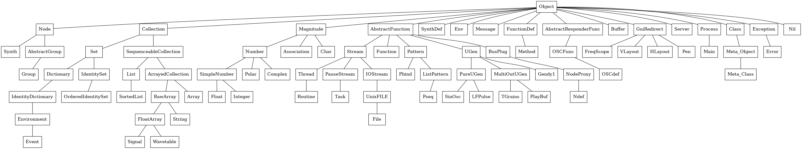

SuperCollider is an objected oriented language in which all entities inherit from the root class Object. In the following SC3 chunk I used the superclassesDo method to make a class tree with the most important classes. For that purpose I chose subclasses of the class Object that do not have any subclasses. I formatted every class path as a line and saved that using the File class to a plain text file. Finally, I copied the exported text in the body of the dot script, and I used strict digraph to ensure that dot will draw unique edges between the nodes.
( var name, f, p, a; name = List[Synth, Group, Event, Float, OrderedIdentitySet, SortedList, Signal, Wavetable, Array, String, Routine, Task, Function, Pattern, Pbind, Pseq, SinOsc, LFPulse, TGrains, Gendy1, Ndef, SynthDef, Env, Message, Method, Integer, Float, Polar, Complex, OSCdef, PlayBuf, Buffer, Association, Char, FreqScope, VLayout, HLayout, Pen, Server, Main, File, Class, Error, Meta_Class, Nil]; // get relative path p = thisProcess.nowExecutingPath.dirname ++ "/src/"; f = File(p++"dotlang","w"); name.size do: { |k| a = List[]; name[k].superclassesDo{ |i| a.add(i.asString) }; a.size do: { |i| if(i+1 < a.size){ f.write(a[a.size-i-1]++" -> "); }{ f.write(a[a.size-i-1]++"[dir=none]\n"); } }; }; f.close; )
Dot seems to have Node as keyword, so I renamed the class of SC3 to Node2 and I assigned its label manually.
strict digraph G {
node[shape=box]
Node2[label="Node"]
Object -> Node2 -> Synth[dir=none]
Object -> Node2 -> AbstractGroup -> Group[dir=none]
Object -> Collection -> Set -> Dictionary -> IdentityDictionary -> Environment -> Event[dir=none]
Object -> Magnitude -> Number -> SimpleNumber -> Float[dir=none]
Object -> Collection -> Set -> IdentitySet -> OrderedIdentitySet[dir=none]
Object -> Collection -> SequenceableCollection -> List -> SortedList[dir=none]
Object -> Collection -> SequenceableCollection -> ArrayedCollection -> RawArray -> FloatArray -> Signal[dir=none]
Object -> Collection -> SequenceableCollection -> ArrayedCollection -> RawArray -> FloatArray -> Wavetable[dir=none]
Object -> Collection -> SequenceableCollection -> ArrayedCollection -> Array[dir=none]
Object -> Collection -> SequenceableCollection -> ArrayedCollection -> RawArray -> String[dir=none]
Object -> AbstractFunction -> Stream -> Thread -> Routine[dir=none]
Object -> AbstractFunction -> Stream -> PauseStream -> Task[dir=none]
Object -> AbstractFunction -> Function[dir=none]
Object -> AbstractFunction -> Pattern[dir=none]
Object -> AbstractFunction -> Pattern -> Pbind[dir=none]
Object -> AbstractFunction -> Pattern -> ListPattern -> Pseq[dir=none]
Object -> AbstractFunction -> UGen -> PureUGen -> SinOsc[dir=none]
Object -> AbstractFunction -> UGen -> PureUGen -> LFPulse[dir=none]
Object -> AbstractFunction -> UGen -> MultiOutUGen -> TGrains[dir=none]
Object -> AbstractFunction -> UGen -> Gendy1[dir=none]
Object -> AbstractFunction -> BusPlug -> NodeProxy -> Ndef[dir=none]
Object -> SynthDef[dir=none]
Object -> Env[dir=none]
Object -> Message[dir=none]
Object -> FunctionDef -> Method[dir=none]
Object -> Magnitude -> Number -> SimpleNumber -> Integer[dir=none]
Object -> Magnitude -> Number -> SimpleNumber -> Float[dir=none]
Object -> Magnitude -> Number -> Polar[dir=none]
Object -> Magnitude -> Number -> Complex[dir=none]
Object -> AbstractResponderFunc -> OSCFunc -> OSCdef[dir=none]
Object -> AbstractFunction -> UGen -> MultiOutUGen -> PlayBuf[dir=none]
Object -> Buffer[dir=none]
Object -> Magnitude -> Association[dir=none]
Object -> Magnitude -> Char[dir=none]
Object -> GuiRedirect -> FreqScope[dir=none]
Object -> GuiRedirect -> VLayout[dir=none]
Object -> GuiRedirect -> HLayout[dir=none]
Object -> GuiRedirect -> Pen[dir=none]
Object -> Server[dir=none]
Object -> Process -> Main[dir=none]
Object -> AbstractFunction -> Stream -> IOStream -> UnixFILE -> File[dir=none]
Object -> Class[dir=none]
Object -> Exception -> Error[dir=none]
Object -> Class -> Meta_Object -> Meta_Class[dir=none]
Object -> Nil[dir=none]
}

Figure 1: SC3 class tree. Using a tablet and horizontal view you can navigate in SC3 class hierarchy more easily.